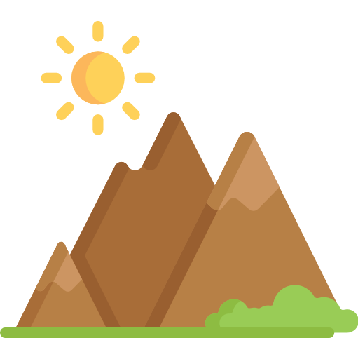
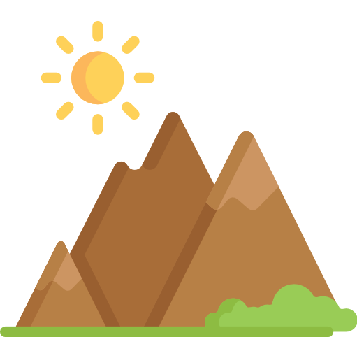

I am based out of Buffalo, New York. I've recently graduated from the University at Buffalo, and have a passion for programming!

I am currently employed as a Systems Analyst at one of the largest grocery store chains in New York. As someone working in this role, I am typically tinkering within a SQL Server database. Whether it be for data analysis, creating a complex stored procedure, or troubleshooting something that went wrong. Automation is another huge aspect to this job, and is a skill I'm constantly trying to improve upon. Through means of deploying either SSIS or Python packages, I can accomplish anything. From a simple email reminder, to scheduling an ETL package that brings in millions of customer records, and is processed into an automatically generated Excel report that is distributed company-wide, ready for everyone to use before they even get out of bed in the morning.

I am an aspiring full-stack developer with a long way to go. Although college has taught me a lot, graduating with a degree in management information systems had left me in a position to fill in the gaps on many topics taught in computer science. Though this has never discouraged me, and working in an environment where I've had to reply on my programming skills has helped me to come a long way. As I continue to sharped my skills in writing Python and VB.NET code at work, in my spare time I enjoy learning about web design and development, the code for this website for example, is written 100% by hand. I also enjoy branching out into technologies such as Android, and even have some experience with making mobile apps! Please checkout my GitHub page if you're intested in seeing some of my projects.

I am a huge outdoor enthusiast and love exploring nature! I've hiked almost all of the nature reserves in Western New York, and have explored much of the finger lakes region, out to the Adirondack mountains. I've traveled to camp on a tropical remote Island off the coast of Florida, to Acadia National park up North in chilly Maine. I hope to someday make it out west to places such as Zion, Yellowstone, or Yosemite. Checkout some of the places I've been on my Instagram page.
If you, or your business needs help on a project, a consultation, or just to network, please feel free to reach out to me!
CONTACT MEIcons made by Freepik from www.flaticon.com
© 2019 Bohdan Tkachenko.